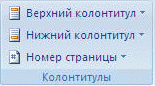

Примечание 1. Для того, чтобы Word не нумеровал первую страницу можно:
Выбрать на вкладке Разметка страницы кнопку запуска диалогового окна Параметры страницы , а затем щелкнуть вкладку Источник бумаги. В разделе Различать колонтитулы установить флажок первой страницы и нажать кнопку ОК (При снятии флажка первой страницы номер на первой странице появится снова).
Или
На вкладке Работа с колонтитулами (появляется при вставке номера страницы или колонтитула, а также при двойном щелчке по номеру страницы, если они были вставлены ранее) щелкнуть кнопку Параметры и выбрать из списка Особый колонтитул для первой страницы.
Примечание 2. Для номеров страниц можно настроить собственный формат. Форматирование можно установить на появившейся после вставки номеров страниц вкладке Работа с колонтитулами, включающей кроме специфической вкладки Конструктор все стандартные вкладки Word для работы с текстом. Например, размер номера страницы устанавливается на вкладке Главная в группе Шрифт.
Назад | Содержание | Вперед